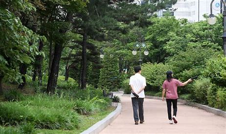

<!DOCTYPE html>
<html lang="en">
    <meta charset="UTF-8">
</html>
<html>
<body>
    <header>
    <h2>about me</h2>
    <hr>
    <p>안녕하세요 제 이름은 김세연입니다. 올해 대학교를 입학한 새내기입니다. 제 관심 분야와 취미 활동을 소개하겠습니다.
    </p>
    </header>

    <nav>
    <audio src="wbc3.m4a"
    controls loop></audio>
    <br><br>
    <h2>목차</h2>
    <ul>
        <li><a href="#관심">관심 분야</a>
        <li><a href="#취미">취미 활동</a>
        <li><a href="#강의">강의 시간표</a>
    </ul>
    <br><br>
    </nav>

    <section>

    <article>
    <h2 id="관심">관심 분야</h2>
    <hr>
    <ul>
        <li>컴퓨터 과학
            <ul>
                <li>인터넷 기술 발전
                <li>정보통신 기술 발전
                <li>정보화 사회
            </ul>
        <li>애니메이션
            <ul>
                <li>귀멸의 칼날
                <li>명탐정 코난
            </ul>
    </article>

    <article>
    <br><br>
    <h2 id="취미">취미 활동</h2>
    <hr>
    <table border="1">
        <tbody>
            <tr>
                <td></td>
                <td></td>
                <td></td>
            </tr>
        </tbody>
        <tbody>
            <tr><td>고양이 보기</td><td>폰 보기</td><td>산책</td></tr>
        </tbody>
    </table>
</article>

<article>
    <br><br>
    <h2 id="강의">강의 시간표</h2>
    <hr>
    <table border="1">
        <caption>2025년도 1학기</caption>
        <thead>
            <tr><th>구분</th><th>월</th><th>화</th><th>&nbsp;수</th><th>&nbsp;목</th><th>&nbsp;금</th><th>&nbsp;토</th></tr>
        </thead>
            <tr><td>9</td><td> </td><td> </td><td> </td><td> </td><td> </td><td> </td></tr>
            <tr><td>10</td><td> </td><td rowspan="3">인터넷콘텐츠</td><td> </td><td rowspan="3">프로그래임언어실습1</td><td> </td><td> </td></tr>
            <tr><td>11</td><td> </td><td> </td><td> </td><td> </td></tr>
            <tr><td>12</td><td> </td><td> </td><td> </td><td rowspan="3">봉사하는 삶</td></tr>
            <td>01</td><td> </td><td> </td><td> </td><td> </td><td> </td></tr>
            <td>02</td><td> </td><td> </td><td> </td><td rowspan="3">컴퓨터과학개론</td><td> </td></tr>
            <td>03</td><td> </td><td> </td><td rowspan="3">sw개발문제해결능력</td><td> </td><td> </td></tr>
            <td>04</td><td> </td><td rowspan="3">컴퓨팅사고력</td><td> </td><td> </td></tr>
            <td>05</td><td> </td><td> </td><td> </td><td> </td></tr>
            <td>06</td><td> </td><td> </td><td> </td><td>컴퓨터활용능력</td><td> </td></tr>
            <td>07</td><td> </td><td> </td><td> </td><td> </td><td> </td><td> </td></tr>
            <td>08</td><td> </td><td>문화콘텐츠</td><td> </td><td> </td><td> </td><td> </td></tr>
        </tbody>
    </table>
</article>

</section>

<br>
<a href="survey.html" target="_blank"> 설문조사 </a>
</body>

<footer>
<br>
<p>2025년 3월 18일 작성</p>
</footer>

</html>